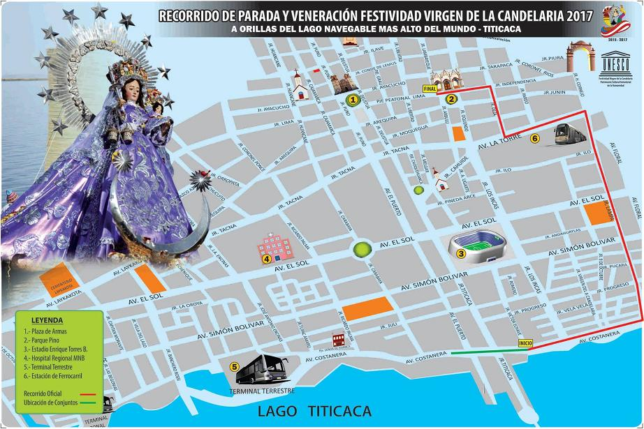

FESTIVIDAD VIRGEN DE LA CANDELARIA 2017
INFORMACIÓN GENERAL
La festividad de la Virgen de la Candelaria 2017, declarada Patrimonio Cultural Inmaterial de la humanidad por la Unesco el 27 de noviembre de 2014. Es una de las festividades más populares del sur de américa con una representación cultural, de música, de danzas y sobre todo una festividad religiosa.
Esta actividad se lleva en el mes de febrero de cada año. Esta actividad presenta como inicio desde el mes de diciembre del año anterior a la actividad los ensayos previos a la actividad principal.
En esta festividad se tiene alrededor de más de 180 conjuntos entre las cuales destacan danzas de origen milenario como danzas de nativas que proceden de las comunidades de la región de Puno a ello se suman las danzas mestizas consideradas también como danzas en trajes de luces por su colorido, donde más de 100 mil personas danzan en honor a la santísima virgen de la candelaria.
Recordar que la fecha principal de cada año es del 2 de febrero donde la imagen de la virgen de la Candelaria sale en procesión por las diferentes calles de la ciudad de Puno.
Sobre el conjunto de danzas se realizan en dos fechas distintas a continuación detallaremos como se desarrolla cada una de ellas.
1.- Concurso de danzas autóctonas: Este concurso es el primero que se lleva en homenaje a la santísima virgen de la candelaria, donde participan muchas de las comunidades de la región de Puno donde podemos observar en una representación sus actividades agrícolas, de pastoreo, así como danzas guerreras entre otros.
2.- Concurso de danzas en trajes de luces: Como habíamos explicado este concurso se lleva posterior al concurso de danzas autóctonas teniendo dos etapas la primera se llevará a cabo en el estadio Enrique torres Belon de la ciudad de Puno y la segunda etapa es la llamada Parada o veneración.
Fecha: 29 enero de 2017
Evento: Concurso de danzas autóctonas
Hora de inicio: 07.00 AM (GMT -5)
Hora de culminación: 06.00 PM (GMT -5)
Lugar: Estadio Enrique Torres Belón, luego de su participación en el estadio los conjuntos saldrán por las diferentes calles de Puno.
Foto Referencial: danzas autoctonas

Video Referencial: danzas autoctonas
Fecha: 02 de Febrero de 2017
Evento: Misa y procesión
Hora: 11.30 AM (GMT -5)
Lugar: Catedral de Puno con destino al santuario de la virgen de la candelaria
Foto Referencial: Virgen de la candelaria
Fecha: 05 de Febrero de 2017
Evento: Concurso de danzas mestizas (En traje de Luces)
Hora de inicio: 07.00 AM (GMT -5)
Hora de culminación: 05.30 PM (GMT -5)
Lugar: Estadio Enrique Torres Belon
Fecha: 06 de Febrero de 2017
Evento: Gran parada y Veneración (En traje de Luces)
Hora de inicio: 08.00 AM (GMT -5)
Hora de culminación: 10.30 PM (GMT -5)
Lugar: Principales calles de Puno
Foto Referencial: danzas de luces
Video Referencial: danzas de luces

Asientos: Por cuenta propia Asientos: Compradas por Nosotros, pero cobraremos una comisión de 30 soles por cada entrada
¿Cómo Llegar A La Ciudad De Puno? Hay varias opciones para llegar a la ciudad de Puno: Por tierra: hay varias empresas que parten desde diferentes ciudades del Perú con destino a la ciudad de Puno. Las ciudades son desde Lima, Cusco, Arequipa, Moquegua, Tacna, así como también desde Bolivia por las fronteras de Desaguadero y Copacabana. Puede consultar tickets de buses en el siguiente enlace: http://bustickets.incalake.com/
Por Avión: Ahora se puede llegar hasta la ciudad de Juliaca lugar donde se encuentra el aeropuerto Manco Capac, las aerolíneas que llegan a Juliaca son LATAM y AVIANCA en horarios diferentes por las mañanas y en las noches y LATAM también llega al medio día vuelos procedentes de LIMA y Cusco. Link donde podrás encontrar vuelos: http://hotelesyvuelos.incalake.com/incalake
Por Tren: Andean Explorer es la empresa que llega desde la ciudad del Cusco, un recorrido de 10 horas pero durante el recorrido podrá disfrutar del hermoso paisaje verde en el mes de febrero.
Distancias Desde Lima hasta Juliaca vía aérea (1 hora 30 minutos); para comprar sus tickets aéreos puede utilizar el siguiente enlace: Hotelesyvuelos.incalake.com - LATAM y AVIANCA Desde Juliaca hasta Puno vía terrestre (55 minutos). Desde Lima hasta Puno vía terrestre (22 horas). Desde Arequipa hasta Puno vía terrestre (6 horas). Desde Cusco hasta Puno vía terrestre (8 horas). Desde Tacna hasta Puno vía terrestre (9 horas). Desde Moquegua hasta Puno vía terrestre (4 horas en VAN H1). Desde La Paz - Bolivia hasta Puno vía terrestre (6 horas).
¿Dónde Quedarme En La Ciudad De Puno? Puno es una ciudad turística por lo que encontrarás hospedajes muy económicos hasta hoteles de gran categoría. Pero tener en cuenta en la festividad virgen de la Candelaria muchos de los establecimientos de alojamiento suben sus precios. Pero si deseas que nosotros te armemos un súper paquete promocional incluido un lugar agradable donde quedarte, puedes escribirnos al siguiente correo ( reservas@incalake.com ) y hacer una reserva/consulta en el siguiente link: Hotelesyvuelos.incalake.com
¿Qué bancos/instituciones encuentro en Puno? Bancos:
- Banco de crédito del Perú - BCP
- Interbank
- Scotiabank
- Banco de la nación
- Caja Areuipa
Instituciones De Ayuda
- iPeru
- Policía Nacional del Perú, Policía de Turismo
- Serenazgo
- Bomberos
- Municipalidad provincial de Puno
- Gobierno regional de Puno
- Oficina de migraciones
¿Lugares Para Visitar En Puno?
Puno es una de los destinos turísticos del sur del Perú, donde miles de turistas llegan para conocer sus principales atractivos del Lago Titicaca. Entre ellos tenemos los siguientes. Dentro de la ciudad de Puno
- Plaza de armas de Puno
- Catedral de la ciudad de Puno
- Balcón de Conde de Lemos
- La casa del corregidor
- Pasaje peatonal Lima
- Parque Pino
- Santuario de la virgen de la candelaria
- Arco Deustua
- Cerro de Huajsapata
- Mirador del Cóndor (kuntur wasi)
- Mirador del Puma (Puma Uta)
- Museo de la Coca
- Museo Carlos Dreyer
Lugares turísticos alrededor de la ciudad de Puno
- La Isla de los Uros
- La Isla de Taquile
- La Isla de Amantani
- Sillustani
- Chucuito
- Aramu Muru
- Juli
- Tiahuanaco
- Lampa
- Pukara
- Tinajani
Actividades:
- Kayak en el Lago
- Bicicleta en el Lago
- Dormir en la Isla de los Uros
- City Tour
- City Tour + Comidas típicas de Puno
- City Tour + recorrido candelaria
- Night Tour (Vísperas a la candelaria)
- Free Walking tour
¿Cómo es el clima en la ciudad de Puno? El clima de la mayoría de localidades es frío y semiseco, con presencia de lluvias en verano y una elevada humedad atmosférica. Sin embargo, en la provincia de Sandia, el clima es cálido en las localidades de la vertiente oriental y semicálido y templado en las otras localidades, con lluvias en todas las estaciones del año en toda la provincia. Temperatura máxima 14°C 58°F Temperatura mínima 0°C 37°F.